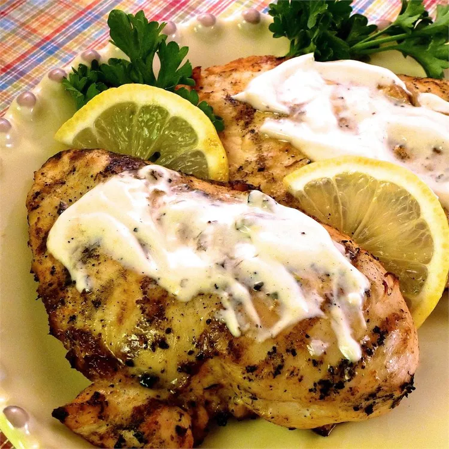

Grilled Greek Yogurt-Marinated Chicken

Description
This Greek yogurt-marinated chicken infused with lemon is delicious. There is something special about what yogurt
does to chicken in its smoky, sizzling time over charcoal. It imparts a tanginess that enhances all the other
flavors and grills to a caramelized dark brown without tasting burnt.
Ingredients
- ½ cup plain low-fat Greek yogurt
- 4 cloves garlic, crushed
- ½ lemon, juiced
- 1 tablespoon lemon zest
- 1 tablespoon olive oil
- 1 tablespoon paprika
- 1 teaspoon herves de Provence
- 1 teaspoon salt
- 1 teaspoon ground black pepper
- 1 (5 pound) whole chicken, cut into 8 pieces
- 1 pinch salt
- ½ cup plain low-fat Greek yogurt
- 1 tablespoon lemon juice
- 1 teaspoon harissa
Steps
- Whisk together yogurt, garlic, lemon juice and zest, olive oil, paprika, herbes de Provence, salt, and black pepper in a medium bowl. Pour into a large resealable plastic bag. Add chicken; stir to coat. Squeeze out excess air and seal the bag. Marinate in the refrigerator for at least 3 hours.
- Preheat an outdoor grill for medium-high heat and lightly oil the grate.
- Make sauce: Stir together yogurt, lemon juice, and harissa in a small bowl until combined. Set aside.
- Remove chicken to a plate or baking sheet lined with paper towels; discard marinade. Pat chicken dry with more paper towels. Season with a pinch of salt.
- Grill chicken, skin-side down, on the preheated grill for 2 minutes. Turn over each piece and move to indirect heat. Continue grilling, turning often, with the lid down until well browned and meat is no longer pink in the center, 30 to 35 minutes. An instant-read thermometer inserted into the thickest part of the thigh, near the bone, should read 165 degrees F (74 degrees C).
- Serve chicken with sauce on the side